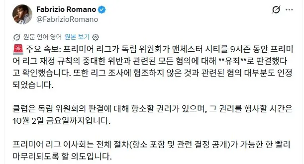
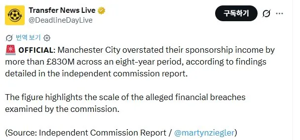
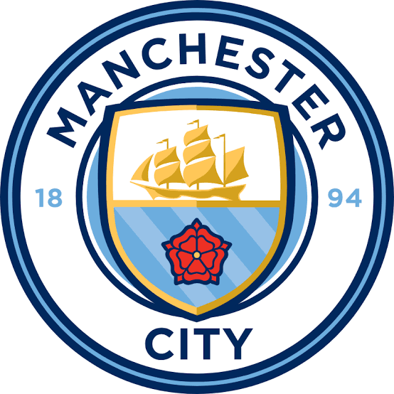

PL 독립위원회 기술조사에 따르면
8년간 8억3천만파운드이상의 스폰서 수입 과대 계상했으며
프리미어리그 재정 규정을 중대하게 위반한 혐위에 대해 유죄라고 판정 했다.
ffp(financial fair play)룰 이란?: 구단은 자체 수익이든 스폰서 수익이든 돈 번만큼 만 써라. 구단주 배경 믿고 돈 막 쓰지말고
룰이 생긴 이유는 맨시티나 PSG 같은 기름집 뒷배 믿고 마구잡이로 선수들 쓸어 담으면서
축구판 전체를 교란시키니까 생긴거임
이 룰 때문에 과 지출이 예상되면 울며겨자먹기로 선수를 팔기도 하고 구단 내 인력을 감축하기도 하는 등 여러가지 노력을 해야함.
실제로 여러 팀들이 그래왔음

하지만 맨시티는 과대 지출이 예상 될 때 ffp 룰에 걸리는데 스폰서 금액 뻥튀기 시켜서 매출 부풀리기 하고
ffp 룰을 교묘하게 피해감
비싼 선수들도 선수지만
감독 및 코칭스태프 연봉 보너스 구단 스태프들 연봉까지 지출에 포함 되기 때문에
맨시티는 현재 개꿀빨았다며
욕을 ㅈㄴ게 먹고 있는 상황임
제대로 된 징계가 내려질지도 관건이네 ㅋㅋㅋ 펩은 진짜 타이밍 좋게 나갔고..